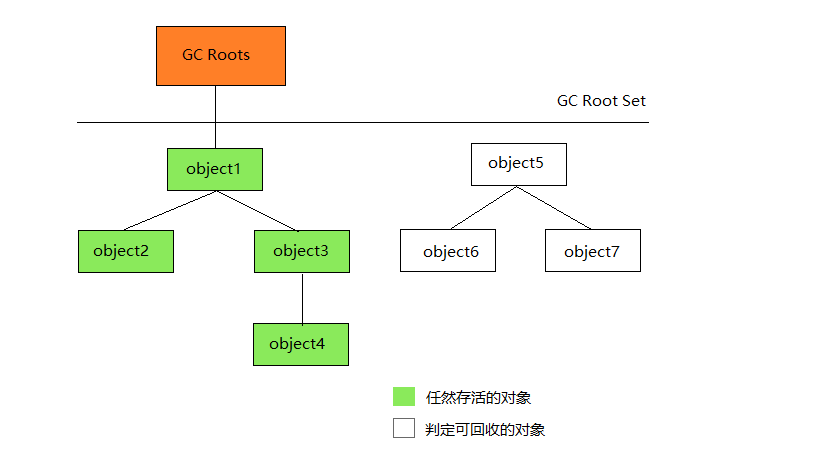
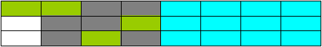
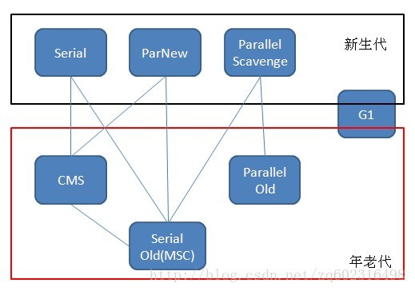
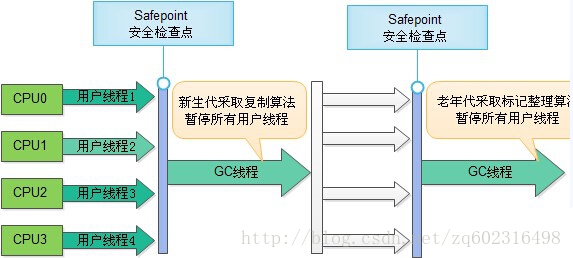
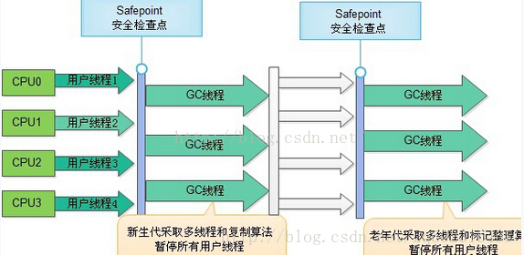
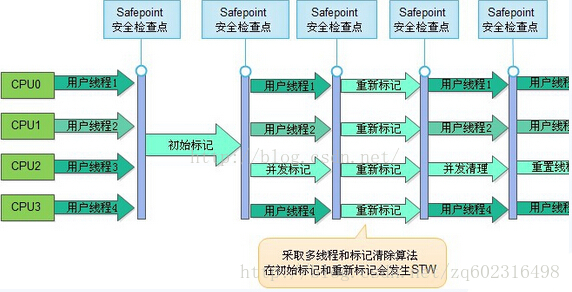
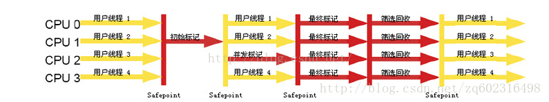

垃圾回收器
Table of Contents
上一章介绍了Java内存运行时区域的各个部分,其中 程序计数器 、 虚拟机栈 、 本地方法栈 3个区域随线程而生,随线程而灭。栈中的栈帧随着方法的进入和退出而有条不紊地执行着出栈和入栈操作。每一个栈帧中分配多少内存基本上是在类结构确定下来时就已知的。因此这几个区域的内存分配和回收都具备确定性,在这几个区域内就不需要过多考虑回收的问题 ,因为方法结束或者线程结束时,内存自然就跟随着回收了。而 Java堆 和 方法区 则不一样，一个接口中的多个实现类需要的内存可能不一样,一个方法中的多个分支需要的内存也可能不一样,只有在程序处于运行期间时才能知道会创建哪些对象,这部分内存的分配和回收都是动态的,垃圾收集器所关注的是这部分内存
对象存活判定
在堆里面存放着Java世界中几乎所有的对象实例,垃圾收集器在对堆进行回收前,第一件事情就是要确定这些对象之中哪些还 存活 着 ,哪些已经 死去 (即不可能再被任何途径使用的对象)
引用计数算法
为每个对象中添加一个引用计数器：
- 每当有—个地方引用它时,计数器值就加1
- 当引用失效时,计数器值就减1
- 任何时刻计数器为0的对象就是不可能再被使用的
客观地说,引用计数算法的实现简单,判定效率也很高,在大部分情况下它都是一个不错的算法,也有一些比较著名的应用案例,例如微软公司的COM技术、使用ActionScript 3, Python等都使用了引用计数算法进行内存管理。但是至少主流的Java虚拟机里面没有选用引用计数算法来管理内存,其中最主要的原因是它 很难解决对象之间相互循环引用的问题
举个简单的例子,下面代码中的 testGC() 方法:对象objA和objB都有字段 instance , 赋值令 objA.instance=objB 及 objB.instance=objA 。此外,这两个对象再无任何引用 ,实际上这两个对象已经不可能再被访问,但是它们因为互相引用着对方,导致它们的引用计数都不为0,于是引用计数算法无法通知GC收集器回收它们
/** * testGC()方法执行后，objA和objB会不会被GC呢？ * @author zzm */ public class ReferenceCountingGC { public Object instance = null; private static final int _1MB = 1024 * 1024; /** * 这个成员属性的唯一意义就是占点内存，以便在能在GC日志中看清楚是否有回收过 */ private byte[] bigSize = new byte[2 * _1MB]; public static void testGC() { ReferenceCountingGC objA = new ReferenceCountingGC(); ReferenceCountingGC objB = new ReferenceCountingGC(); objA.instance = objB; objB.instance = objA; objA = null; objB = null; // 假设在这行发生GC，objA和objB是否能被回收？ System.gc(); } }
[Fu11 GC(System)[Tenured:0 K->210K(10240K),0.0149142 secs]4603K->21OK(19456K),[Perm:2999K-> 2999K(2124 8K )] ,0.0150007 secs] [Times :user=0.01 sys=0.00 ,real=0.02 secs ] Heap def new generation total 9216K,used 82K[0x00000000055e0000 ,0x0000000005feO000 ,0x0000000005feOO00 ) Eden space 8192K ,llused[0x00000000055e0000 ,0x00000000055f4850 ,0x0000000005de0000 ) from space 1024K, Olusedf0x0000000005de0000 ,0x0000000005de0000 ,0x0000000005ee0000 ) to space 1024K ,0lused[0x0000000005ee0000 ,0x0000000005ee0000 ,0x0000000005fe0000 ) tenured generation total 1024OK,used 21OK[0x0000000005feO000 ,0x00000000069e0000 ,0x00000000069e0000 ) the space 10240K ,2lused[0x0000000005fe0000 ,0x0000000006014al8 ,0x0000000006014cO0 ,0x00000000069e0000 ) compacting perm gen total 21248K,used 3016K[0x00000000069e0000 ,0x0000000007ea0000 ,0x00000000ObdeO000 ) the space 21248K ,14lused[0x00000000069e0000 ,0x0000000006cd2398 ,0x0000000006cd2400 ,0x0000000007ea0000 ) Mo shared spaces configured.
从运行结果中可以清楚看到，GC日志中包含 4603K->210K ,意味着虚拟机并没有因为这两个对象互相引用就不回收它们,这也从侧面说明虚拟机并不是通过引用计数算法来判断对象是否存活的
可达性分析算法
在主流的商用程序语言的主流实现中, 都是称通过可达性分析来判定对象是否存活的。这个算法的基本思路就是通过一系列的称为 GC Roots 的对象作为起始点,从这些节点开始向下搜索,搜索所走过的路径称为引用链,当一个对象到GC Roots没有任何引用链相连时,则证明此对象是不可用的。如下图所示,对象 object 5 、 object 6 、 object 7 虽然互相有矣联,但是它们到GC Roots是不可达的 ,所以它们将会被判定为是 可回收的对象

在Java语言中可作为 GC Roots 的对象包括下面几种:
- 虚拟机栈(栈帧中的本地变量表)中引用的对象
- 方法区中类静态属性引用的对象
- 方法区中常量引用的对象
- 本地方法栈中JNI(native方法)引用的对象
引用
无论是通过引用计数算法判断对象的引用数量，还是通过可达性分析算法判断对象的引用链是否可达，判定对象是否存活都与 引用 reference 有关。在JDK1.2之后，Java对引用的概念进行了扩充：
- 强引用 ：在程序代码之中普遍存在的，类似 Object object = new Object() 这类的引用， 只要强引用还存在，垃圾收集器永远不会回收掉被引用的对象
- 软引用 ：描述一些还在用但并非必需的对象。对于软引用关联着的对象，在 系统将要发生内存溢出异常之前，将会把这些对象列进回收范围之中进行第二次回收 ，如果这次回收完成还没有足够的内存，才会抛出内存溢出异常。在JDK1.2之后提供了 SoftReference 类来实现软引用
- 弱引用 ：描述非必需对象的，但是它的强度比软引用要更弱一些， 被弱引用关联的对象只能生存到下一次垃圾收集发生之前。当垃圾收集器工作时，无论当前内存是否足够，都会回收掉只被弱引用关联的对象 。在JDK1.2之后提供了 WeakReference 类来实现弱引用
- 虚引用 ： 也称为 幻影引用 ，它是最弱的一种引用关系。一个对象是否有虚引用的存在，完全不会对其生存时间构成影响，也无法通过虚引用来取得一个对象实例。 为一个对象设置虚引用关联的唯一目的就是能在这个对象被收集器回收时收到一个系统通知 。在JDK1.2之后提供了 PhantomReference 类来实现虚引用。
生存还是死亡
即使在可达性分析算法中不可达的对象, 也并非是 非死不可 的, 这时候它们暂时处于 缓刑 阶段, 要真正宣告一个对象死亡, 至少要经历两次标记过程:
- 如果对象在进行可达性分析后发现没有与GC Roots相连接的引用链,那它将会被 第一次标记并且进行一次筛选 , 筛选的条件是 此对象是否有必要执行finalize()方法
- 当对象没有覆盖finalize()方法,或者finalize()方法已经被虚拟机调用过,虚拟机将这两种情况都视为 没有必要执行
- 如果这个对象被判定为有必要执行finalize()方法,那么这个对象将会放置在一个叫做 F-Queue 的队列之中
- 稍后由一个由虚拟机自动建立的、低优先级的 Finalizer线程 去执行它。所谓的 执行 是指虚拟机会触发这个方法,但并不承诺会等待它运行结束,这样做的原因是： 如果一个对象在finalize()方法中执行缓慢,或者发生了死循环将很可能会导致F-Queue队列中其他对象永久处于等待,甚至导致整个内存回收系统崩溃
- finalize()方法是对象逃脱死亡命运的最后一次机会,稍后GC将对 F-Queue中的对象进行第二次小规模的标记
- 如果对象要在finalize()中成功拯救自己: 只要重新与引用链上的任何一个对象建立关联即可,譬如把自己(this关键字)赋值给某个类变量或者对象的成员变量, 那在第二次标记时它将被移除出 即将回收 的集合
- 如果对象这时候还没有逃脱,那基本上它就真的被回收了
下面代码中可以看到一个对象的finalize()被执行,但是它仍然可以存活：
/** * 此代码演示了两点： * 1.对象可以在被GC时自我拯救。 * 2.这种自救的机会只有一次，因为一个对象的finalize()方法最多只会被系统自动调用一次 * @author zzm */ public class FinalizeEscapeGC { public static FinalizeEscapeGC SAVE_HOOK = null; public void isAlive() { System.out.println("yes, i am still alive :)"); } @Override protected void finalize() throws Throwable { super.finalize(); System.out.println("finalize mehtod executed!"); FinalizeEscapeGC.SAVE_HOOK = this; } public static void main(String[] args) throws Throwable { SAVE_HOOK = new FinalizeEscapeGC(); //对象第一次成功拯救自己 SAVE_HOOK = null; System.gc(); // 因为Finalizer方法优先级很低，暂停0.5秒，以等待它 Thread.sleep(500); if (SAVE_HOOK != null) { SAVE_HOOK.isAlive(); } else { System.out.println("no, i am dead :("); } // 下面这段代码与上面的完全相同，但是这次自救却失败了 SAVE_HOOK = null; System.gc(); // 因为Finalizer方法优先级很低，暂停0.5秒，以等待它 Thread.sleep(500); if (SAVE_HOOK != null) { SAVE_HOOK.isAlive(); } else { System.out.println("no, i am dead :("); } } }
finalize mehtod executed ! yes,i am still alive : ) no,i am dead : (
- SAVEHOOK对象的finalize()方法确实被GC收集器触发过,并且在被收集前成功逃脱了
- 代码中有两段完全一样的代码片段,执行结果却是一次逃脱成功,一次失败,这是因为 任何一个对象的finalize()方法都只会被系统自动调用一次 , 如果对象面临下一次回收,它的finalize()方法不会被再次执行,因此第二段代码的自救行动失败了
建议大家尽量避免使用finalize方法,因为它不是C/C++中的析构函数,而是Java刚诞生时为了使C/C++程序员更容易接受它所做出的一个妥协 它的运行代价高昂,不确定性大,无法保证各个对象的调用顺序 finalize()能做的所有工作,使用try-finally或者其他方式都可以做得更好，更及时
回收方法区
很多人认为方法区(以前的永久代)是没有垃圾收集的,Java虚拟机规范中确实说过可以不要求虚拟机在方法区实现垃圾收集,而且在方法区中进行垃圾收集的 性价比 一般比较低。在堆中尤其是在新生代中,常规应用进行一次垃圾收集一般可以回收70%〜95%的空间,而永久代的垃圾收集效率远低于此
永久代的垃圾收集主要回收两部分内容:
- 废弃常量
- 无用的类
回收废弃常量与回收Java堆中的对象非常类似。以常量池中字面量的回收为例,假如一个字符串 abc 已经进入了常量池中,但是当前系统没有任何一个String对象是叫做 abc 的，换句话说就是没有任何String对象引用常量池中的 abc 常量, 也没有其他地方引用了这个字面量,如果这时发生内存回收,而且必要的话,这个 abc 常量就会被系统清理出常量池。常量池中的其他类(接口)、方法、字段的符号引用也与此类似
判定一个常量是否是 废弃常量 比较简单,而要判定一个类是否是 无用的类 的条件则相对苛刻许多。类需要同时满足下面3个条件才能算是 无用的类 :
- 该类所有的实例都已经被回收,也就是Java堆中不存在该类的任何实例
- 加载该类的ClassLoader已经被回收
- 该类对应的java.lang.Class对象没有在任何地方被引用,无法在任何地方通过反射访问该类的方法
虚拟机可以对满足上述3个条件的无用类进行回收,这里说的仅仅是 可以 ,而并不是和对象一样,不使用了就必然会回收。是否对类进行回收,HotSpot虚拟机提供了 -XX:noclassgc 参数进行控制 ,还可以使用 -verbose:class 以及 -XX:+TraceClassLoading 、 -XX:+TraceClassUnLoading 查看类加载和卸载信息,其中 -verbose:class 和 -XX:+TraceClassLoading 可以在 Product 版的虚拟机中使用, -XX:+TraceClassUnLoading 参数需要 FastDebug 版的虚拟机支持
在大量使用反射、动态代理、CGLib等ByteCode框架、动态生成JSP以及OSGi这类频繁自定义ClassLoader的场景都需要虚拟机具备类卸载的功能,以保证永久代不会溢出
垃圾回收算法
标记-清除算法
标记—清除 算法是最基础的收集算法，它分为 标记 和 清除 两个阶段：首先标记出所需回收的对象，在标记完成后统一回收掉所有被标记的对象，它的标记过程其实就是前面的根搜索算法中判定垃圾对象的标记过程。标记—清除算法的执行情况如下图所示：
回收前状态：
回收后状态：

该算法有如下缺点：
- 标记和清除过程的 效率都不高
- 标记清除后会 产生大量不连续的内存碎片 ，空间碎片太多可能会导致，当程序在以后的运行过程中需要分配较大对象时无法找到足够的连续内存而不得不触发另一次垃圾收集动作
复制算法
复制算法 是针对 标记—清除 算法的缺点，在其基础上进行改进而得到的，它将可用内存按容量分为大小相等的两块，每次只使用其中的一块，当这一块的内存用完了，就将还存活着的对象复制到另外一块内存上面，然后再把已使用过的内存空间一次清理掉
回收前状态：

回收后状态：
优点：
- 每次 只对一块内存 进行回收， 运行高效
- 只需 移动栈顶指针 ，按顺序分配内存即可， 实现简单
- 内存回收时 不用考虑内存碎片 的出现
缺点：
- 可一次性分配的最大内存缩小了一半
改进的复制算法
根据新生代的特点，98%的对象朝生夕死，并不需要按照1:1的比例来划分内存空间，而是将内存划分为 一块较大的Eden空间和两块较小的Survivor空间，每次使用Eden和其中一块Survivor 。当回收时，将Eden和Survivor中还存活的对象一次性地复制到另外一块Survivor空间，最后清理掉Eden和刚才用过的Survivor空间，清理完成后，刚刚被清理的Eden和另一块在回收时放入存活对象的Survivor空间作为使用内存，刚被清理的Survivor作为保留空间，以便后面用来回收之用。
这种改进的收集算法也有一个问题，就是在回收时那块空的Survivor空间能否放得下Eden和使用的Survivor空间中还存活的对象， 如果Survivor空间不够存放上一次新生代收集下来的存活对象 ，此时就需要向老年代 借 内存，那些剩余未放下的对象就通过分配担保机制进入老年代
标记-整理算法
复制算法如果 在对象存活率较高时，就需要进行较多次的复制操作 ，效率也会变低。而对于老年代中的对象，一般存活率都较高，因此需要选用其他收集算法： 标记-整理 算法。标记过程仍然与 标记-清除 算法中一样，但是在标记完成后并不直接对可回收对象进行清理，而是 让所有存活的对象都向一端移动，然后直接清理掉端边界以外的内存 。算法示意图如下：
回收前状态：

回收后状态：

分代收集
当前商业虚拟机的垃圾收集 都采用 分代收集 ，它根据对象的存活周期的不同将内存划分为几块，一般是把Java堆分为 新生代 和 老年代 。在新生代中，每次垃圾收集时都会发现有大量对象死去，只有少量存活，因此可选用 复制算法 来完成收集，而老年代中因为对象存活率高、没有额外空间对它进行分配担保，就必须使用 标记—清除 算法或 标记—整理 算法来进行回收
垃圾收集器
垃圾收集器是垃圾收集算法的具体实现。Java规范对垃圾收集器的实现没有做任何规定，因此不同的虚拟机提供的垃圾收集器可能有很大差异。HotSpot虚拟机1.7版本使用了多种收集器。如下图：

共有7种作用不不同分代的收集器，其中
- 新生代：
- Serial
- ParNew
- Parallel Scavenge
- G1
- 老年代：
- CMS
- Serial Old（MSC）
- Parallel Old
- G1
相互连线表示收集器可以搭配使用
Serial
Serial 收集器是最基本、发展历史最为悠久的收集器。在曾经的JDK1.3之前是新生代收集的唯一选择。
这个收集器是一个单线程的收集器， 只会使用一个CPU或一条收集线程 ，在它进行垃圾收集的时，必须暂停其他所有的工作线程，直到它收集结束。这个过程是由虚拟机后台发起并自动完成的，对用户不可见的情况下把用户正常的工作线程全部停掉，这对许多应用是无法接受的。下图展示了运行过程：

虽然Serial有着 Stop The World 无法消除的影响，但是它仍旧是虚拟机运行在Client模式下的默认新生代收集器。在单CPU环境来说，Serial由于没有线程交互的开销，专心做垃圾收集，因而具有最高的收集效率。在用户的桌面应用中，分配给虚拟机的内存一般不会很大，收集一两百M的新生代所用的停顿时间完全可以控制在一百ms之内。所以Serial收集器对于运行在Client模式下的虚拟机来说是一个很好地选择
ParNew收集器
ParNew 收集器其实就是 Serial收集器的多线程版本 ，除了使用多条线程进行垃圾收集之外，其他行为和Serial收集器一样。ParNew是许多运行在Server模式下的虚拟机中首选的新生代收集器，其中有一个与性能无关的重要原因，除了Serial收集器外，目前只有ParNew能与老年代的CMS收集器配合使用
ParNew是一种 并行 的收集器。在垃圾回收中：
- 并行： 多条垃圾收集线程并行工作，用户线程处于等待状态
- 并发： 用户线程与垃圾收集线程同时执行
Parallel Scavenge 收集器
Parallel Scavenge 收集器使用的是复制算法，也是一个并行的多线程收集器
和ParNew相似，但是Parallel Scavenge的关注点不同，其他收集器的关注点是尽可能地缩短垃圾收集时用户线程的停顿时间，而Parallel Scavenge收集器的目标则是达到一个可控制的 吞吐量
吞吐量 = 运行用户代码时间 / (运行用户代码时间 + 垃圾收集时间)
Serial Old收集器
Serial Old 收集器是新生代Serial收集器的老年代版本，同样是一个单线程收集器，使用 标记-整理 算法，Serial Old的主要意义也是在于给Client模式下的虚拟机使用
Parallel Old收集器
Parallel Old 是新生代收集器 Prarllel Scavenge 的老年代版本，使用多线程和 标记-整理 算法。运行流程如下：

CMS收集器
CMS ( Concurrent Mark Sweep )收集器是一种以获取最短回收停顿时间为目标的收集器。主要用于互联网或B/S系统的服务端，这类应用尤其重视服务的响应速度
CMS是基于 标记-清除 算法的，运作过程更加复杂一些，分为4个步骤：
- 初始标记：标记GC Roots直接关联的对象
- 并发标记：可达性分析算法
- 重新标记：并发变动修改
- 并发清除
其中初始标记、重新标记这两个步骤任然需要停顿其他用户线程。初始标记仅仅只是标记出GC ROOTS能直接关联到的对象，速度很快，并发标记阶段是进行GC ROOTS根搜索算法阶段，会判定对象是否存活。而重新标记阶段则是为了修正并发标记期间，因用户程序继续运行而导致标记产生变动的那一部分对象的标记记录，这个阶段的停顿时间会比初始标记阶段稍长，但比并发标记阶段要短。由于整个过程中耗时最长的并发标记和并发清除过程中，收集器线程都可以与用户线程一起工作，所以整体来说， CMS收集器的内存回收过程是与用户线程一起并发执行的 。执行过程如下图

优点
- 并发收集
- 低停顿
缺点
- 对CPU资源非常敏感，虽然不至于导致用户线程停顿，但是会降低吞吐率
- 无法清理 浮动垃圾 ，由于CMS并发清理阶段用户线程还在运行着，伴随程序运行自然就还会有新的垃圾不断出现，这一部分垃圾出现在标记过程之后，CMS无法在当次收集中处理掉它们，只好留待下一次的GC
- 会产生 大量空间碎片 ，因为CMS是基于 标记-清除 算法，这种算法的最大缺点就是会产生大量空间碎片，CMS提供了一个 -XX:+UseCMSCompaceAtFullCollection 的开关参数（默认开启），用于在CMS收集器顶不住要进行Full GC时开启内存碎片的合并整理过程
G1收集器
G1 收集器是最新的一款收集器，是一种面向服务端应用的垃圾收集器，有如下特点：
- 并行与并发 ：G1能充分利用多CPU、多核环境下的硬件优势，使用多个CPU（CPU或者CPU核心）来缩短Stop-The-World停顿的时间
- 分代收集 ：分代概念在G1中依然得以保留。虽然G1可以不需其他收集器配合就能独立管理整个GC堆，但它能够采用不同的方式去处理新创建的对象和已经存活了一段时间、熬过多次GC的旧对象以获取更好的收集效果
- 空间整合 ：与CMS的 标记-清理 算法不同，G1从整体看来是基于 标记-整理 算法实现的收集器，从局部（两个Region之间）上看是基于 复制 算法实现，无论如何，这两种算法都意味着G1运作期间不会产生内存空间碎片，收集后能提供规整的可用内存
- 可预测的停顿时间
使用G1收集器时，Java堆的内存布局与就与其他收集器有很大差别，它将整个Java堆划分为多个大小相等的独立区域 Region ，虽然还保留有新生代和老年代的概念，但新生代和老年代不再是物理隔离的了，它们都是一部分Region的集合
G1的收集过程分为以下几个步骤：
- 初始标记
- 并发标记
- 最终标记
- 筛选回收
前几个步骤和CMS有很多相似之处。运行示意图如下：

GC日志
阅读GC日志是处理Java虚拟机内存问题的基础技能，它只是一些人为确定的规则，没有太多技术含量
33.125:[GC[DefNew:3324K->152K(3712K),0.0025925 secs]3324K->152K(11904K),0.0031680 secs] 100.667:[Fu11GC[Tenured:0K->210K(10240K),0.0149142sec s]4603K->21OK(19456K),[Perm:2999K-> 2999K(21248K )] ,0.0150007 secs] [Times :user=0.01 sys=0.00 ,real=0.02 secs]
最前面的数字 33.125 : 和 100.667 : 代表了 GC发生的时间 这个数字的含义是从Java 虚拟机启动以来经过的秒数
GC 日志开头的 [GC 和 [FullGC 说明了这次 垃圾收集的停顿类型 ，而不是用来区分新生代GC还是老年代GC的。如果有 Full , 说明这次GC是发生了 Stop-The-World 的 ,例如下面这段新生代收集器ParNew的日志也会出现 [Full GC (这一般是因为出现了分配担保失败之类的问题，所以才导致STW )。 如果是调用Systemgc()方法所触发的收集,那么在这里将显示 [FullGC(System)
[Full GC 283.736:[ParNew:261599K->261599K(261952K) ,0.0000288 secs]
接下来的 [DefNew 、 [Tenured 、 [Perm 表示 GC发生的区域 ，这里显示的区域名称与使用的GC收集器是密切相关的。例如上面样例所使用的Serial收集器中的新生代名为 Default New Generation ，所以显示的是 [DefNew 。如果是ParNew收集器，新生代名称就会变为 [ParNew ，意为 Parallel New Generation 。如果采用Parallel Scavenge收集器，那它配套 的新生代称为 PSYoungGen ，老年代和永久代同理，名称也是由收集器决定的
后面方括号内部的 3324K- > 152K ( 3712K ) 含义是 GC前该内存区域已使用容量- > GC后该内存区域已使用容量(该内存区域总容量) 。而在方括号之外的 3324K->152K ( 11904K ) 表示 GC前Java堆已使用容量- > GC后Java堆已使用容量(Java堆总容量)
再往后 0.0025925 sec 表示该内存区域 GC所占用的时间 ，单位是秒。有的收集器会给出更具体的时间数据,如 [Times : user=0.01 sys=0.00 , real=0.02 secs] ，这里面的user、 sys和real与Linux的time命令所输出的时间含义一致，分别决表用户态消耗的CPU时间、内核态消耗的CPU事件和操作从开始到结束所经过的墙钟时间。 CPU时间与墙钟时间的区别是：墙钟时间包括各种非运算的等待耗时，例如等待磁盘I/O、等待线程阻塞，而CPU时间不包括这些耗时，但当系统有多CPU或者多核的话，多线程操作会叠加这些CPU时间，所以看到user或sys时间超过real时间是完全正常的
GC参数
| 参数 | 描述 |
|---|---|
| UseSerialGC | 虚拟机运行在Client模式下的默认值，打开此开关后，使用Serial+Serial Old的收集器组合进行内存回收 |
| UseParNewGC | 打开此开关后，使用ParNew+Serial Old的收集器组合进行内存回收 |
| UseConcMarkSweepGC | 打开此开关后，使用ParNew+CMS+Serial Old的收集器组合进行内存回收。Serial Old收集器将作为CMS>收集器出现Concurrent Mode Failure失败后的后备收集器使用 |
| UseParallelGC | 虚拟机运行在Server模式下的默认值，打开此开关后，使用Parallel Scavenge + Serial Old（PS MarkSweep）的收集器组合进行内存回收 |
| UseParallelOldGC | 打开此开关后，使用Parallel Scavenge + Parallel Old的收集器组合进行内存回收 |
| SurvivorRatio | 新生代中Eden区域与Survivor区域的容量比值，默认值为8，代表Eden：Survivor=8：1 |
| PretenureSizeThreshold | 直接晋升到老年代的对象大小，设置这个参数后，大于这个参数的对象将直接在老年代分配 |
| MaxTenuringThreshold | 晋升到老年代的对象年龄，每个对象在坚持过一次Minor GC之后，年龄就增加1，当超过这个参数时就进入老年代 |
| UseAdaptiveSizePolicy | 动态调整Java堆中各个区域的大小以及进入老年代的年龄 |
| HandlePromotionFailure | 是否允许分配担保失败，即老年代的剩余空间不足以应付新生代的整个Eden和Survivor区的所有对象都>存活的极端情况 |
| ParallelGCThreads | 设置并行GC时进行内存回收的线程数 |
| GCTimeRatio | GC时间占总时间的比率，默认值为99，即允许1%的GC时间。仅在使用Parallel Scavenge收集器时生效 |
| MaxGCPauseMillis | 设置GC的最大停顿时间，仅在使用Parallel Scavenge收集器时生效 |
| CMSInitingOccupancyFraction | 设置CMS收集器在老年代空间被使用多少后触发垃圾收集。默认值为68%，仅在使用CMS收集器时生效 |
| UseCMSCompactAtFullCollection | 设置CMS收集器在完成垃圾收集后是否要进行一次内存碎片整理，仅在使用CMS收集器时生效 |
| CMSFullGCsBeforeCompaction | 设置CMS收集器在进行若干次垃圾收集后再启动一次内存碎片整理。仅在使用CMS收集器时生效 |
内存分配与回收策略
Java技术体系中所提倡的自动内存管理最终可归结为自动化的解决了两个问题：
- 对象的内存分配，往大方向上讲，就是在 堆上 分配 但也可能经过JIT编译后被拆散为标量类型并间接地栈上分配
- 对象主要分配在新生代的Eden区上，如果启动了 本地线程分配缓冲 ，将按线程优先在 TLAB上分配
对象优先在Eden分配
大多数情况下，对象在新生代Eden区中分配。当Eden区没有足够的空间进行分配时，虚拟机将发起一次 Minor GC
虚拟机提供了 -XX:+PrintGCDetails 这个收集器日志参数，告诉虚拟机在发生垃圾收集行为时打印内存回收日志，并且在进程退出的时候输出当前内存各区域的分配情况
下面代码中的testAllocation()方法中，尝试分配3个2MB大小和1个4MB大小的对象，在运行时通过 -Xms20M、 -Xmx20M和 -Xmn10M 这3个参数限制Java堆大小为20MB，且不可扩展，其中10MB分配给新生代，剩下的10MB分配给老年代。 -XX:SurvivorRatio=8 决定了新生代中Eden区与一个Survivor区的空间比例是8比1，从输出的结果也能清晰地看到 eden space 8192K、from space 1024K、to space 1024K 的信息，新生代总可用空间为9216KB Eden区+1个Survivor区的总容量
private static final int _1MB = 1024 * 1024; /** * VM参数：-verbose:gc -Xms20M -Xmx20M -Xmn10M -XX:SurvivorRatio=8 */ public static void testAllocation() { byte[] allocation1, allocation2, allocation3, allocation4; allocation1 = new byte[2 * _1MB]; allocation2 = new byte[2 * _1MB]; allocation3 = new byte[2 * _1MB]; allocation4 = new byte[4 * _1MB]; // 出现一次Minor GC }
[GC [DefNew: 6651K->148K(9216K), 0.0070106 secs] 6651K->6292K(19456K), 0.0070426 secs] [Times: user=0.00 sys=0.00, real=0.00 secs] Heap def new generation total 9216K, used 4326K [0x029d0000, 0x033d0000, 0x033d0000) eden space 8192K, 51% used [0x029d0000, 0x02de4828, 0x031d0000) from space 1024K, 14% used [0x032d0000, 0x032f5370, 0x033d0000) to space 1024K, 0% used [0x031d0000, 0x031d0000, 0x032d0000) tenured generation total 10240K, used 6144K [0x033d0000, 0x03dd0000, 0x03dd0000) the space 10240K, 60% used [0x033d0000, 0x039d0030, 0x039d0200, 0x03dd0000) compacting perm gen total 12288K, used 2114K [0x03dd0000, 0x049d0000, 0x07dd0000) the space 12288K, 17% used [0x03dd0000, 0x03fe0998, 0x03fe0a00, 0x049d0000) No shared spaces configured.
执行 testAllocation() 中分配allocation4对象的语句时会发生一次Minor GC，这次GC的结果是 新生代6651KB变为148KB，但总内存占用量则几乎没有减少 因为 allocation1、2、3三个对象都是存活的，虚拟机几乎没有找到可回收的对象 。这次GC发生的原因是给allocation4分配内存的时候，发现Eden已经被占用了6MB，剩余空间已不足以分配allocation4所需的4MB内存，因此发生Minor GC。GC期间虚拟机又发现已有的3个2MB大小的对象全部无法放入Survivor空间（Survivor空间只有1MB大小），所以只好通过分配担保机制提前转移到老年代去
这次GC结束后，4MB的allocation4对象被顺利分配在Eden中。因此程序执行完的结果是 Eden占用4MB（被allocation4占用），Survivor空闲，老年代被占用6MB （被allocation1、2、3占用）。通过GC日志可以证实这一点
- 新生代GC Minor GC ：指发生在新生代的垃圾收集动作，因为Java对象大多都具备朝生夕灭的特性，所以Minor GC非常频繁，一般回收速度也比较快
- 老年代GC Full GC ：指发生在老年代的GC，出现了Full GC，经常会伴随至少一次的Minor GC（但非绝对的，在ParallelScavenge收集器的收集策略里就有直接进行Full GC的策略选择过程）。Full GC的速度一般会比Minor GC慢10倍以上
大对象直接进入老年代
所谓大对象就是指，需要大量连续内存空间的Java对象，最典型的大对象就是那种很长的字符串及数组。大对象对虚拟机的内存分配来说就是一个坏消息，经常出现大对象容易导致内存还有不少空间时就提前触发垃圾收集以获取足够的连续空间来 安置 它们
虚拟机提供了一个 -XX:PretenureSizeThreshold 参数，令大于这个设置值的对象直接在老年代中分配。这样做的目的是 避免在Eden区及两个Survivor区之间发生大量的内存拷贝
示例中的 testPretenureSizeThreshold() 方法后，Eden空间几乎没有被使用，而老年代10MB的空间被使用了40%，也就是4MB的allocation对象直接就分配在老年代中，这是因为 PretenureSizeThreshold 被设置为3MB（就是3145728B，这个参数不能与-Xmx之类的参数一样直接写3MB），因此超过3MB的对象都会直接在老年代中进行分配
private static final int _1MB = 1024 * 1024; /** * VM参数：-verbose:gc -Xms20M -Xmx20M -Xmn10M -XX:SurvivorRatio=8 * -XX:PretenureSizeThreshold=3145728 */ public static void testPretenureSizeThreshold() { byte[] allocation; allocation = new byte[4 * _1MB]; //直接分配在老年代中 }
Heap def new generation total 9216K, used 671K [0x029d0000, 0x033d0000, 0x033d0000) eden space 8192K, 8% used [0x029d0000, 0x02a77e98, 0x031d0000) from space 1024K, 0% used [0x031d0000, 0x031d0000, 0x032d0000) to space 1024K, 0% used [0x032d0000, 0x032d0000, 0x033d0000) tenured generation total 10240K, used 4096K [0x033d0000, 0x03dd0000, 0x03dd0000) the space 10240K, 40% used [0x033d0000, 0x037d0010, 0x037d0200, 0x03dd0000) compacting perm gen total 12288K, used 2107K [0x03dd0000, 0x049d0000, 0x07dd0000) the space 12288K, 17% used [0x03dd0000, 0x03fdefd0, 0x03fdf000, 0x049d0000) No shared spaces configured.
PretenureSizeThreshold参数只对Serial和ParNew两款收集器有效，Parallel Scavenge收集器不认识这个参数 Parallel Scavenge收集器一般并不需要设置。如果遇到必须使用此参数的场合，可以考虑ParNew加CMS的收集器组合
长期存活的对象将进入老年代
虚拟机既然采用了分代收集的思想来管理内存，那内存回收时就必须能识别哪些对象应当放在新生代，哪些对象应放在老年代中。为了做到这点，虚拟机给每个对象定义了一个对象年龄 Age 计数器 。如果对象在Eden出生并经过第一次Minor GC后仍然存活，并且能被Survivor容纳的话，将被移动到Survivor空间中，并将对象年龄设为1。对象在Survivor区中每熬过一次Minor GC，年龄就增加1岁，当它的年龄增加到一定程度（默认为 15岁 ）时，就会被晋升到老年代中。对象晋升老年代的年龄阈值，可以通过参数 -XX:MaxTenuringThreshold 来设置
private static final int _1MB = 1024 * 1024; /** * VM参数：-verbose:gc -Xms20M -Xmx20M -Xmn10M -XX:SurvivorRatio=8 -XX:MaxTenuringThreshold=1 * -XX:+PrintTenuringDistribution */ @SuppressWarnings("unused") public static void testTenuringThreshold() { byte[] allocation1, allocation2, allocation3; allocation1 = new byte[_1MB / 4]; // 什么时候进入老年代取决于XX:MaxTenuringThreshold设置 allocation2 = new byte[4 * _1MB]; allocation3 = new byte[4 * _1MB]; allocation3 = null; allocation3 = new byte[4 * _1MB]; }
以 MaxTenuringThreshold=1 的参数设置来运行的结果：
[GC [DefNew Desired Survivor size 524288 bytes, new threshold 1 (max 1) - age 1: 414664 bytes, 414664 total : 4859K->404K(9216K), 0.0065012 secs] 4859K->4500K (19456K), 0.0065283 secs] [Times: user=0.02 sys=0.00, real=0.02 secs] [GC [DefNew Desired Survivor size 524288 bytes, new threshold 1 (max 1) : 4500K->0K(9216K), 0.0009253 secs] 8596K->4500K (19456K), 0.0009458 secs] [Times: user=0.00 sys=0.00, real=0.00 secs] Heap def new generation total 9216K, used 4178K [0x029d0000, 0x033d0000, 0x033d0000) eden space 8192K, 51% used [0x029d0000, 0x02de4828, 0x031d0000) from space 1024K, 0% used [0x031d0000, 0x031d0000, 0x032d0000) to space 1024K, 0% used [0x032d0000, 0x032d0000, 0x033d0000) tenured generation total 10240K, used 4500K [0x033d0000, 0x03dd0000, 0x03dd0000) the space 10240K, 43% used [0x033d0000, 0x03835348, 0x03835400, 0x03dd0000) compacting perm gen total 12288K, used 2114K [0x03dd0000, 0x049d0000, 0x07dd0000) the space 12288K, 17% used [0x03dd0000, 0x03fe0998, 0x03fe0a00, 0x049d0000) No shared spaces configured.
以 MaxTenuringThreshold=15 的参数设置来运行的结果：
[GC [DefNew Desired Survivor size 524288 bytes, new threshold 15 (max 15) - age 1: 414664 bytes, 414664 total : 4859K->404K(9216K), 0.0049637 secs] 4859K-> 4500K(19456K), 0.0049932 secs] [Times: user= 0.00 sys=0.00, real=0.00 secs] [GC [DefNew Desired Survivor size 524288 bytes, new threshold 15 (max 15) - age 2: 414520 bytes, 414520 total : 4500K->404K(9216K), 0.0008091 secs] 8596K-> 4500K(19456K), 0.0008305 secs] [Times: user= 0.00 sys=0.00, real=0.00 secs] Heap def new generation total 9216K, used 4582K [0x029d0000, 0x033d0000, 0x033d0000) eden space 8192K, 51% used [0x029d0000, 0x02de4828, 0x031d0000) from space 1024K, 39% used [0x031d0000, 0x03235338, 0x032d0000) to space 1024K, 0% used [0x032d0000, 0x032d0000, 0x033d0000) tenured generation total 10240K, used 4096K [0x033d0000, 0x03dd0000, 0x03dd0000) the space 10240K, 40% used [0x033d0000, 0x037d0010, 0x037d0200, 0x03dd0000) compacting perm gen total 12288K, used 2114K [0x03dd0000, 0x049d0000, 0x07dd0000) the space 12288K, 17% used [0x03dd0000, 0x03fe0998, 0x03fe0a00, 0x049d0000) No shared spaces configured.
allocation1 对象需要256KB的内存空间，Survivor空间可以容纳：
- MaxTenuringThreshold=1 ：allocation1对象在第二次GC发生时进入老年代，新生代已使用的内存GC后会非常干净地变成0KB
- MaxTenuringThreshold=15 ：第二次GC发生后，allocation1对象则还留在新生代Survivor空间，这时候新生代仍然有404KB的空间被占用
动态对象年龄判定
为了能更好地适应不同程序的内存状况，虚拟机并不总是要求对象的年龄必须达到MaxTenuringThreshold才能晋升老年代， 如果在Survivor空间中相同年龄所有对象大小的总和大于Survivor空间的一半，年龄大于或等于该年龄的对象就可以直接进入老年代 ，无须等到MaxTenuringThreshold中要求的年龄
private static final int _1MB = 1024 * 1024; /** * VM参数：-verbose:gc -Xms20M -Xmx20M -Xmn10M -XX:SurvivorRatio=8 -XX:MaxTenuringThreshold=15 * -XX:+PrintTenuringDistribution */ @SuppressWarnings("unused") public static void testTenuringThreshold2() { byte[] allocation1, allocation2, allocation3, allocation4; allocation1 = new byte[_1MB / 4]; // allocation1+allocation2大于survivor空间的一半 allocation2 = new byte[_1MB / 4]; allocation3 = new byte[4 * _1MB]; allocation4 = new byte[4 * _1MB]; allocation4 = null; allocation4 = new byte[4 * _1MB]; }
执行testTenuringThreshold2()_ 方法，并设置参数 -XX: MaxTenuringThreshold=15 ，会发现运行结果中Survivor的空间占用仍然为0%，而老年代比预期增加了6%，也就是说allocation1、allocation2对象都直接进入了老年代，而没有等到15岁的临界年龄。因为 这两个对象加起来已经达到了512KB，并且它们是同年的 ，满足同年对象达到Survivor空间的一半规则。只要注释掉其中一个对象的new操作，就会发现另外一个不会晋升到老年代中去了
[GC [DefNew Desired Survivor size 524288 bytes, new threshold 1 (max 15) - age 1: 676824 bytes, 676824 total : 5115K->660K(9216K), 0.0050136 secs] 5115K-> 4756K(19456K), 0.0050443 secs] [Times: user=0.00 sys=0.01, real=0.01 secs] [GC [DefNew Desired Survivor size 524288 bytes, new threshold 15 (max 15) : 4756K->0K(9216K), 0.0010571 secs] 8852K->4756K (19456K), 0.0011009 secs] [Times: user=0.00 sys=0.00, real=0.00 secs] Heap def new generation total 9216K, used 4178K [0x029d0000, 0x033d0000, 0x033d0000) eden space 8192K, 51% used [0x029d0000, 0x02de4828, 0x031d0000) from space 1024K, 0% used [0x031d0000, 0x031d0000, 0x032d0000) to space 1024K, 0% used [0x032d0000, 0x032d0000, 0x033d0000) tenured generation total 10240K, used 4756K [0x033d0000, 0x03dd0000, 0x03dd0000) the space 10240K, 46% used [0x033d0000, 0x038753e8, 0x03875400, 0x03dd0000) compacting perm gen total 12288K, used 2114K [0x03dd0000, 0x049d0000, 0x07dd0000) the space 12288K, 17% used [0x03dd0000, 0x03fe09a0, 0x03fe0a00, 0x049d0000) No shared spaces configured.
空间分配担保
在发生Minor GC时，虚拟机会检测之前每次晋升到老年代的平均大小是否大于老年代的剩余空间大小：
- 大于，则改为直接进行一次Full GC
- 小于，则查看HandlePromotionFailure设置是否允许担保失败：
- 允许，那只会进行Minor GC
- 不允许，则也要改为进行一次Full GC
新生代使用复制收集算法，但为了内存利用率，只使用其中一个Survivor空间来作为轮换备份，因此当出现大量对象在Minor GC后仍然存活的情况时（最极端就是内存回收后新生代中所有对象都存活），就需要老年代进行分配担保，让Survivor无法容纳的对象直接进入老年代。与生活中的贷款担保类似，老年代要进行这样的担保，前提是老年代本身还有容纳这些对象的剩余空间，一共有多少对象会活下来，在实际完成内存回收之前是无法明确知道的，所以只好 取之前每一次回收晋升到老年代对象容量的平均大小值作为经验值 ，与老年代的剩余空间进行比较，决定是否进行Full GC来让老年代腾出更多空间
取平均值进行比较其实仍然是一种动态概率的手段，也就是说如果某次Minor GC存活后的对象突增，远远高于平均值的话，依然会导致 担保失败 。如果出现了HandlePromotionFailure失败，那就只好在失败后重新发起一次Full GC。虽然担保失败时绕的圈子是最大的，但大部分情况下都还是会将HandlePromotionFailure开关打开，避免Full GC过于频繁，参见代码：
private static final int _1MB = 1024 * 1024; /** * VM参数：-verbose:gc -Xms20M -Xmx20M -Xmn10M -XX:SurvivorRatio=8 -XX:- HandlePromotionFailure */ @SuppressWarnings("unused") public static void testHandlePromotion() { byte[] allocation1, allocation2, allocation3, allocation4, allocation5, allocation6, allocation7; allocation1 = new byte[2 * _1MB]; allocation2 = new byte[2 * _1MB]; allocation3 = new byte[2 * _1MB]; allocation1 = null; allocation4 = new byte[2 * _1MB]; allocation5 = new byte[2 * _1MB]; allocation6 = new byte[2 * _1MB]; allocation4 = null; allocation5 = null; allocation6 = null; allocation7 = new byte[2 * _1MB]; }
以 HandlePromotionFailure = false 的参数设置来运行的结果：
[GC [DefNew: 6651K->148K(9216K), 0.0078936 secs] 6651K->4244K(19456K), 0.0079192 secs] [Times: user=0.00 sys=0.02, real=0.02 secs] [GC [DefNew: 6378K->6378K(9216K), 0.0000206 secs] [Tenured: 4096K->4244K(10240K), 0.0042901 secs] 10474K->4244K(19456K), [Perm : 2104K->2104K(12288K)], 0.0043613 secs] [Times: user=0.00 sys=0.00, real=0.00 secs] 以MaxTenuringThreshold= true的参数设置来运行的结果： [GC [DefNew: 6651K->148K(9216K), 0.0054913 secs] 6651K->4244K(19456K), 0.0055327 secs] [Times: user=0.00 sys=0.00, real=0.00 secs] [GC [DefNew: 6378K->148K(9216K), 0.0006584 secs] 10474K->4244K(19456K), 0.0006857 secs] [Times: user=0.00 sys=0.00, real=0.00 secs]